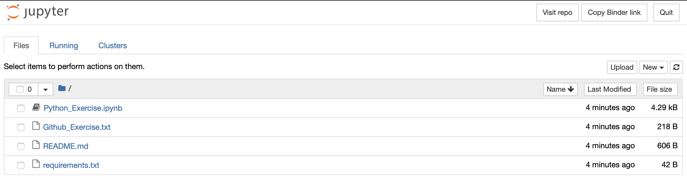

Dunlap-PASEA-IAU Research Internship: Call for Applicants
PASEA is working towards mentoring alumni in research projects. This is the first official opportunity. To apply, you must be a alumni of WAISSYA.
Research Internship Details and Selection Criteria
A PASEA alumnae/alumni from the will be selected to partake in an 8-week research internship supervised remotely by Dr. Allison Man (Dunlap Institute of Astronomy and Astrophysics, Canada; Instructor of PASEA) and Dr. Jielai Zhang (Swinburne University of Technology, Australia; Co-Director of PASEA). The student will be selected by the two supervisors based on:
- They should not already be paid by another source for the same work.
- Availability in November and December, 2020.
- Computing skills as demonstrated by (CV and) the response to the coding exercise provided in the internship application.
- How useful this internship is to their future career goals.
Internship Funding
The student will be provided a stipend of $200CAD/week, plus $400CAD lump sum as an internet supplement. These amounts are referenced off internship stipends in South Africa and Nigeria. The total amount payable to the student is $2,000CAD. The student will also receive a letter of acceptance to the program from Dunlap.
How To Apply
Please follow these application instructions. The Github and Python exercises are there for us to assess selection criteria 3, your computing skills, try to complete as much of it as you can as it is part of the selection criteria. However, if you do not complete every single aspect of the exercises, please still fill out the application form to apply.
- Create a github account (5 mins).
- Sign into your github account. Fork this PASEA-Dunlap-IAU Internship Exercise github repository by clicking fork on the page, the button will be in the top right of the page. For details on how to fork and what forking is you can read this page (5 mins).
- Install git on your computer. (Time needed will vary.)
- Clone your forked repository to your computer. This is "Step 2: Create a local clone of your fork" on this page. This is a fancy way of saying make a copy of the repository directory on your computer. (5 mins)
- Answer the simple questions in file "Github_Exercise.txt" and save (1 min). Commit this change to your local repository then push to your github account. You can do this using "git add", "git commit" and "git push" commands. See this for more details on git add, commit and push (1-10 mins, depending on if you have done this before. Once it is open, it will look similar to the screenshot below).
- Go to this online Jupyter notebook , open Python_Exercise.ipyn on the webpage (it can take up to 10 minutes to open, once it is done, it should look like the below image with heading "jupyter".). There are 5 questions in the notebook, answer as many of these as you can. Please submit your answer by downloading the notebook as a .html file and uploading it to the application form. If you got git working, please also download the notebook, place it in your local PASEA-Dunlap-IAU Internship Exercise github repository, git add, commit and push.
- Fill out the application form here.

Contact
Questions can be directed at Pasea.Collaboration@gmail.com or posted on the PASEA "AStronomy Summer School" WhatsApp Group.